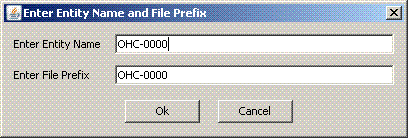
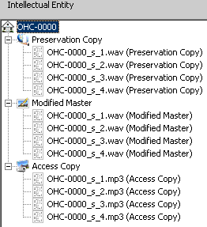

File Naming
There are several parts that need to be considered for a naming scheme
- Representation Types (Intellectual Entity section).
- Physical structure (Intellectual Entity section).
- Logical structure (Structure Map section).
There are two ways to use the file naming scheme (details below), but the basic premise is as follows:
- The directory names define the Intellectual Entity.
- The file names define the structure map.
You can create an automatic Intellectual Entity without creating a structure map, but you cannot create a structure map without creating an Intellectual Entity.
File Naming Scheme Method one
Intellectual Entity
- The root of the intellectual entity will be a directory.
- Under the root will be directories defining the representation types.
These directories will be prefixed by two letters and an underscore to denote which representation type is required:
- DO_ means Digital Original
- PC_ means Preservation Copy
- MM_ means Modified Master
- AC_ means Access Copy
- The intellectual entity will then mirror the file structure for each representation type.
Structure Map
A structure map is a completely optional part of the intellectual entity. If this is not present, then the entity structure is used for navigation.
To create an automatic structure map, the files must be prefixed or suffixed with 2 parts separated with an underscore. There must also be an underscore after the two parts (e.g. P_1_filename.doc or filename_s_1.doc).
The two parts are:
- Structure type
This is a character (or group of characters) that represents a specific structure type.
The structure types are defined using the "Manage Structure Map File Descriptions" screen.
There are four structure types pre-loaded (these can be modified or deleted as required):
- P - Page.
- C - Cover page
- X - Abstract
- S - Side
- Structure type number.
For example P_1_ would be page 1
Two example file structures are shown below:
No structure map
This would result in an intellectual entity with two sections
- A digital original section with two files.
- An access copy section with two files.
With structure map
- Intellectual Entity
- DO_Original
- Chapter 1
- P_1_file1.doc
- P_2_file2.doc
- Chapter 2
- P_3_file3.doc
- P_4_file4.doc
- AC_Thumbnail
- Chapter 1
- P_1_file1.gif
- P_2_file2.gif
- Chapter 2
- P_3_file3.gif
- P_4_file4.gif
This would also result in an intellectual entity with two sections.
Both sections would have a Chapter 1 and a Chapter 2 section.
The Chapter 1 sections would have 2 files
- The digital original Chapter 1 would have the files file1.doc and file2.doc
- The access copy Chapter 1 would have the files file1.gif and file2.gif
The structure map would have two chapters.
Chapter 1 would have Page 1 and Page 2.
Chapter 2 would have Page 3 and Page 4.
Page 1 would have file1.doc and file1.gif
Page 2 would have file2.doc and file2.gif
etc
File Naming Scheme Method two
Intellectual Entity
This method was primarily designed for sound preservation because of their workflow requirements.
- There should be a root directory that contains preservation copies.
- There may be multiple intellectual entities stored in the same directory.
- All files associated with an IE will have the same file prefix. This prefix will be used to filter the list of files.
- The root directory may have a sub-directory with Access Copies, and/or a sub-directory with Modified Masters, and/or a sub-directory with Digital Originals.
In this method, a file will be used to describe an intellectual entity.
Right click on a file and select "Use file to describe IE root".

The system will then take all characters up to the first underscore and use that as the entity name and file prefix.
You will be prompted to confirm these choices:

All files in the root directory that start with the specified file prefix will be added to a preservation copy entity.
All files in sub-directories that start with the specified file prefix will be added to a representation type matching the sub-directory name.
The above example would result in this:

Only files starting with the specified file prefix will be displayed
Because the _s_ suffixes match an existing structure map file description (see Managing structure map file types), a structure map would also be automatically generated. It would look like this: